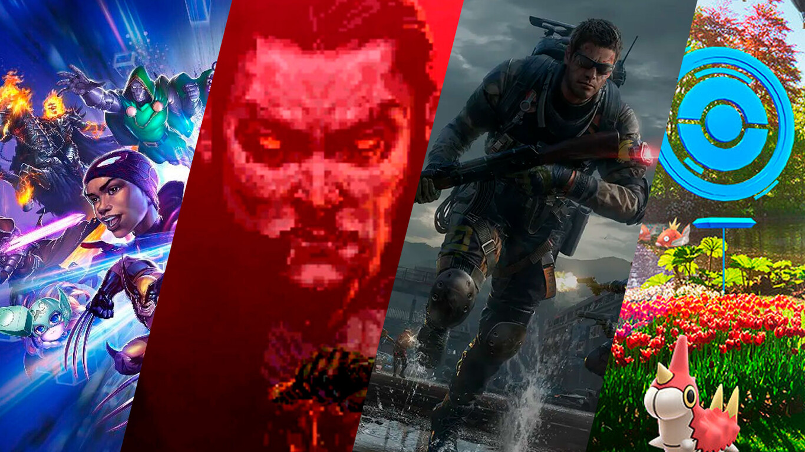
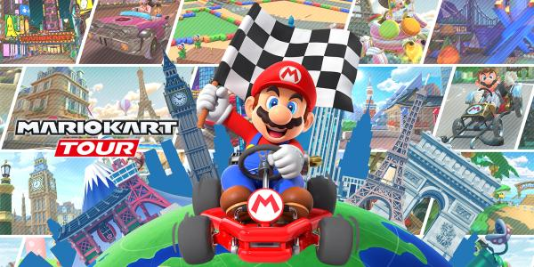

En JuegosOnline.com, nos apasiona brindar a nuestros usuarios
una experiencia de juego en línea excepcional. Desde nuestro lanzamiento en 2015,
nos hemos dedicado a ofrecer una amplia gama de juegos emocionantes y características
innovadoras para satisfacer las necesidades de nuestra creciente comunidad de jugadores.
Nuestra Misión
Nuestra misión es proporcionar un espacio divertido y seguro
donde los jugadores de todas las edades puedan reunirse, competir y disfrutar
de una amplia variedad de juegos en línea. Nos esforzamos por ofrecer
la mejor experiencia de juego posible, con una selección cuidadosamente curada de juegos,
torneos emocionantes y una comunidad vibrante y acogedora.
Qué Ofrecemos
Gran Variedad de Juegos: Desde emocionantes juegos de acción hasta desafiantes
rompecabezas y juegos estratégicos,tenemos algo para todos los gustos.
Torneos y Competencias: Organizamos torneos regulares donde los jugadores
pueden competir por premios increíbles y la gloria.
Comunidad Activa: Nuestra comunidad de jugadores es el corazón de JuegosOnline.com.
Únete a discusiones, haz nuevos amigos y comparte tus logros.
Seguridad y Confianza: Nos comprometemos a proporcionar un entorno seguro y protegido para nuestros usuarios,
con medidas de seguridad robustas y políticas claras.
 
Nuestro Equipo
Detrás de JuegosOnline.com hay un equipo apasionado de desarrolladores, diseñadores y entusiastas
de los juegos que trabajan arduamente para hacer de nuestra plataforma el mejor destino para los amantes
de los juegos en línea. Nos esforzamos por la excelencia en todo lo que hacemos y siempre estamos buscando
nuevas formas de mejorar la experiencia de nuestros usuarios.
Contactanos
¿Tienes alguna pregunta, comentario o sugerencia? ¡Nos encantaría saber de ti! No dudes en ponerte en contacto
con nuestro equipo de soporte en support@JuegosOnline.com y estaremos encantados de ayudarte en lo que podamos.
Gracias por ser parte de la comunidad de JuegosOnline.com y por hacer posible nuestra misión de llevar la diversión
y la emoción de los juegos en línea a jugadores de todo el mundo.